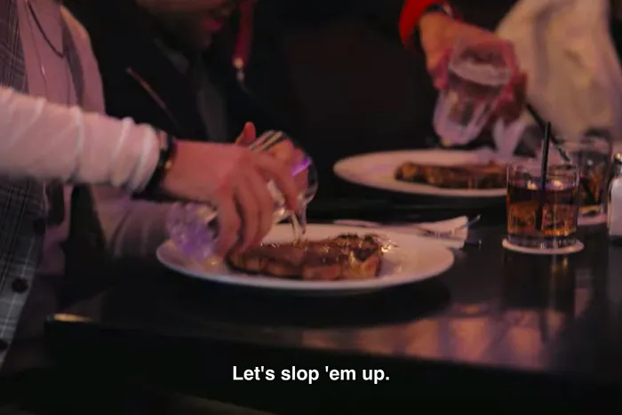

Sloppy Steaks

Description
Ingredients
- 1 steak just waiting on getting slopped
- A lot of salt
- Some pepper (freshly grounded of course)
- one tablespoon of oil
- The biggest glass of water you can find
Steps
- Pour up your water glass so you have it ready in time
- Add the oil to a skillet and turn on the heat
- Lay that big meaty sucker in the skillet when the oil
has gotten a bit spicy
- Let that sucker sear on both sides until you got a nice crust
- Lower the heat and cock until perfectly medium rare
- Let the steak rest for 5 minutes before placing it on a platter
- Pour the water glass over the steak and get ready for some SLOPPY STEAKS